The synthesis of carbohydrates in animal cells always employs precursors having at least three carbons, all at an oxidation state lower than that of carbon in CO2. Photosynthetic organisms, by contrast, can make carbohydrates from CO2 and water. They synthesize glucose, sucrose, and other carbohydrates by reducing CO2 at the expense of energy furnished by the ATP and NADPH generated in photosynthetic electron transfer. This process represents a fundamental difference between autotrophic (phototrophic or chemotrophic) and heterotrophic organisms. Autotrophs can use CO2 as the sole source of all the carbon atoms required for biosynthesis not only of cellulose and starch, but also of the lipids and proteins and all of the many other organic components of plant cells. By contrast, heterotrophic organisms in general are unable to bring about the net reduction of CO2 to form "new" glucose in any significant amounts. Carbon dioxide
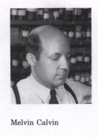
can be taken up by animal tissues, as in the pyruvate carboxylase reaction during gluconeogenesis, but the CO2 molecule incorporated into oxaloacetate is lost in a subsequent reaction step (Fig. 19-3). Similarly, the CO2 taken up by acetyl-CoA carboxylase during fatty acid synthesis in animal tissues (Chapter 20) or by carbamoyl phosphate synthetase I during urea formation (Chapter 17) is lost in later steps.Green plants contain in their chloroplasts unique enzymatic machinery to catalyze the conversion of CO2 into simple (reduced) organic compounds, a process called CO2 fixation, or carbon fixation. Plants convert these simple products of photosynthesis into more complex biomolecules, including sugars, polysaccharides, and metabolites derived from them, using metabolic pathways similar to those in animals. The reactions that result in CO2 fixation make up a cyclic pathway in which key intermediates are constantly regenerated. The pathway was elucidated in the early 1950s by Melvin Calvin and coworkers, and is often called the Calvin cycle.
The first stage in the fixation of CO2 into organic linkage (Fig. 19-19) is its condensation with a five-carbon acceptor, ribulose-1,5-bisphosphate, to form two molecules of 3-phosphoglycerate. (Note that Figure 19-19 shows the number of molecules reacting to give net formation of one molecule of triose-this takes three molecules of CO2.) In the second stage the 3-phosphoglycerate is reduced to glyceraldehyde-3-phosphate: three molecules of CO2 are fixed to three molecules of ribulose-1,5-bisphosphate to form six molecules of glyceraldehyde-3phosphate (18 carbons). One molecule of this triose phosphate (three carbons) can either be used for energy production via glycolysis and the citric acid cycle, or condensed to hexose phosphates to be used in the synthesis of starch or sucrose. In the third stage, five of the six molecules of glyceraldehyde-3-phosphate (15 carbons) are used to regenerate three molecules of ribulose-1,5-bisphosphate, the starting material.
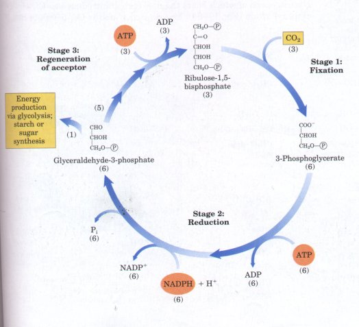
Figure 19-19 The three stages of CO2 fixation in photosynthetic organisms. Stoichiometries of three key intermediates are shown tnumbers in parentheses) so that the fate of carbon atoms entering and leaving the cycle is apparent. As shown here, three CO2 are fixed to permit the net synthesis of one molecule of glyceraldehyde-3-phosphate. This is called the photosynthetic carbon reduction cycle or the Calvin cycle.
Thus the overall process is cyclical and allows the continuous conversion of CO2 into triose and hexose phosphates. Fructose-6-phosphate is a key intermediate in stage 3. The pathway from hexose phosphate to pentose bisphosphate involves the same reactions used in animal cells for the conversion of pentose phosphates to hexose phosphates during the operation of the pentose phosphate pathway, an alternative route for glucose oxidation (Fig. 14-22). In photosynthetic fixation of CO2, this pathway operates in the opposite direction, converting hexose phosphates into pentose phosphates.
Stage 1: Fixation of CO2 into 3-Phosphoglycerate An important clue to the nature of the CO2 fixation mechanisms in photosynthetic organisms first came in the late 1940s when Calvin and his associates illuminated a suspension of green algae in the presence of radioactive carbon dioxide (14CO2) for only a few seconds. They quickly killed the cells, extracted their contents, and with the help of chromatographic methods searched for the metabolites in which the labeled carbon first appeared. The first compound that became labeled was 3-phosphoglycerate, with the 14C predominantly located in the carboxyl carbon atom. This atom does not become labeled rapidly in animal tissues in the presence of radioactive CO2. These experiments strongly suggested that 3-phosphoglycerate is an early intermediate in photosynthesis. The enzyme in green leaf extracts that catalyzes incorporation of CO2 into organic form is ribulose-1,5-bisphosphate carboxylase or RuBP carboxylase/oxygenase (often called rubisco for short). (The enzyme's oxygenase activity is discussed later in this chapter.) As a carboxylase, rubisco catalyzes the covalent attachment of CO2 to the five-carbon sugar ribulose-1,5-bisphosphate and the cleavage of the unstable six-carbon intermediate to form two molecules of 3-phosphoglycerate, one of which bears the new carbon introduced as CO2 in its carboxyl group (Fig. 19-20). The rubisco of plants (Mr 550,000) has a complex structure (Fig. 19-21a, b). There are eight large subunits (each of Mr 56,000), each containing an active site, and eight small subunits (each of Mr 14,000), whose function is not well understood. The subunit structure of rubisco of photosynthetic bacteria is quite different, with two subunits that resemble the large subunits of the plant enzyme in many respects (Fig. 19-21c). The plant enzyme is located in the chloroplast stroma, where it makes up about 50% of the total chloroplast protein. Rubisco, which does not occur in animals, is the most abundant enzyme in the biosphere; it is the key enzyme in the production of biomass from CO2.
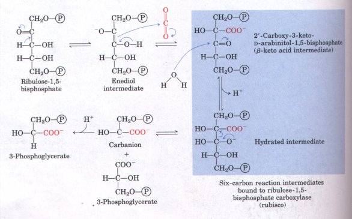
Figure 19-20 The first stage of CO2 fixation is the reaction catalyzed by ribulose-1,5-bisphosphate carboxylase (rubisco). The carboxylated reaction intermediate is believed to be the enzyme-bound sixcarbon β-keto acid shown here, which is hydrolyzed and released from the enzyme surface as two identical three-carbon products, one of which contains the carbon atom from CO2 (red).
Rubisco is subject to regulation by the covalent addition of a molecule of CO2 to the e-amino group of a certain Lys residue to form a carbamate (Fig. 19-21). This carbamate binds to a Mg2+ ion; the resulting complex is essential for activity, as we shall see later (see Fig. 19-30) and may function directly in catalysis. Note that this is not the same molecule of CO2 that is attached to ribulose-1,5-bisphosphate in the reaction catalyzed by this enzyme.
Stage 2: Conuersion o f 3-Phosphoglycerate to Glyceraldehyde-3-Phosphate 3-Phosphoglycerate is converted into glyceraldehyde-3-phosphate in two steps that are essentially the reversal of the corresponding steps in glycolysis, with one exception: the nucleotide cofactor for the reduction of 1,3-bisphosphoglycerate is NADPH, not NADH (Fig. 19-22, p. 622). The chloroplast stroma contains the full complement ofglycolytic enzymes. These stromal enzymes are isozymes (see Box 14-3) of those found in the cytosol; both sets of enzymes catalyze the same reactions, but they are products of different genes.
In the first step of the sequence, 3-phosphoglycerate kinase in the stroma catalyzes the transfer of phosphate from ATP to 3-phosphoglycerate, yielding 1,3-bisphosphoglycerate (Fig. 19-22). Then NADPH donates electrons in a reduction catalyzed by glyceraldehyde-3phosphate dehydrogenase, producing glyceraldehyde-3-phosphate. In addition to its role as an intermediate in CO2 fixation, glyceraldehyde-3-phosphate has several possible fates in the plant cell. It may be oxidized via glycolysis for energy production or used for hexose synthesis (Fig. 19-22).
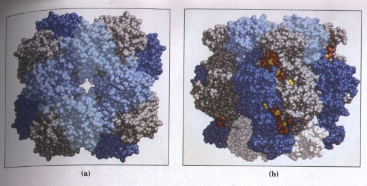
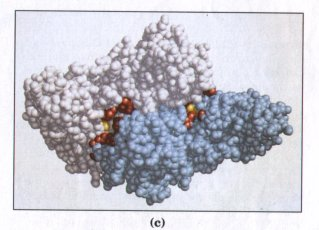
Figure 19-21 Structure and function of ribulose1,5-bisphosphate carboxylase (rubisco). (a) Top view and (b) side view of a space-filling model of rubisco from tobacco, based on x-ray diffraction analysis of the crystalline enzyme. There are eight large subunits (shown in gray and dark blue) and eight small ones (white and shades of light blue), tightly packed into a structure of Mr 550,000. Rubisco is present at a concentration of about 250 mg/mL in the chloroplast stroma, corresponding to an extraordinarily high concentration of active sites (~4 mM). Active-site amino acid residues are shown in red. Sulfate molecules bound to the active site in the crystal structure (these are not normal substrates) are in yellow. (c) Space-filling model of rubisco from the bacterium Rhodospirillum rubrum. The subunits are shown in white and light blue. Amino acid residues at the active site are in red. A Lys residue at the active site, which is carboxylated to form a carbamate in the active enzyme (see Fig. 19-30), is shown in yellow.Stage 3: Regeneration of Ribulose-1,5-Bisphosphate from Triose Phosphates As we have seen, the first reaction in the fixation of CO2 into triose phosphates consumes ribulose- 1,5- bisphosphate. For continuous flow of CO2 into carbohydrate, ribulose-1,5 - bisphosphate must be constantly regenerated. Plant cells solve this problem with a series of reactions that, together with stages 1 and 2 discussed above, form a cyclic pathway (Fig. 19-23). By this pathway, the product of the first reaction (3-phosphoglycerate) passes through a series of transformations that eventually lead to the regeneration of the starting material, ribulose-1,5-bisphosphate.
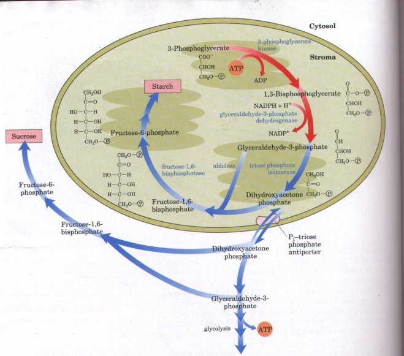
Figure 19-22 The second phase of CO2 fixation is the conversion of 3-phosphoglycerate into glyceraldehyde-3-phosphate (red arrows). Alternative fates of the fixed carbon of glyceraldehyde-3-phosphate are also shown (blue arrows). Most is recycled to form ribulose-1,5-bisphosphate as shown in Fig. 19-23. The "extra" glyceraldehyde-3-phosphate may be used immediately as a source of energy, converted to sucrose for transport, or stored as starch for future use. If glyceraldehyde-3-phosphate is needed for starch synthesis, it condenses with dihydroxyacetone phosphate in the stroma and is converted to fructose-6-phosphate, a precursor of starch. In other situations it is converted to dihydroxyacetone phosphate, which leaves the chloroplast via a specific transporter (see Fig. 19-28). In the cytosol, dihydroxyacetone phosphate can be degraded via glycolysis to provide energy, or used to form fructose-6-phosphate and hence sucrose.
The regeneration of ribulose-1,5-bisphosphate involves rearrangements of the carbon skeletons of glyceraldehyde-3-phosphate and dihydroxyacetone phosphate produced in the first two stages of carbon fixation. The intermediates in the pathway include three-, four-, five-, six-, and seven-carbon sugars. In the following discussion, all step numbers refer to Figure 19-23.
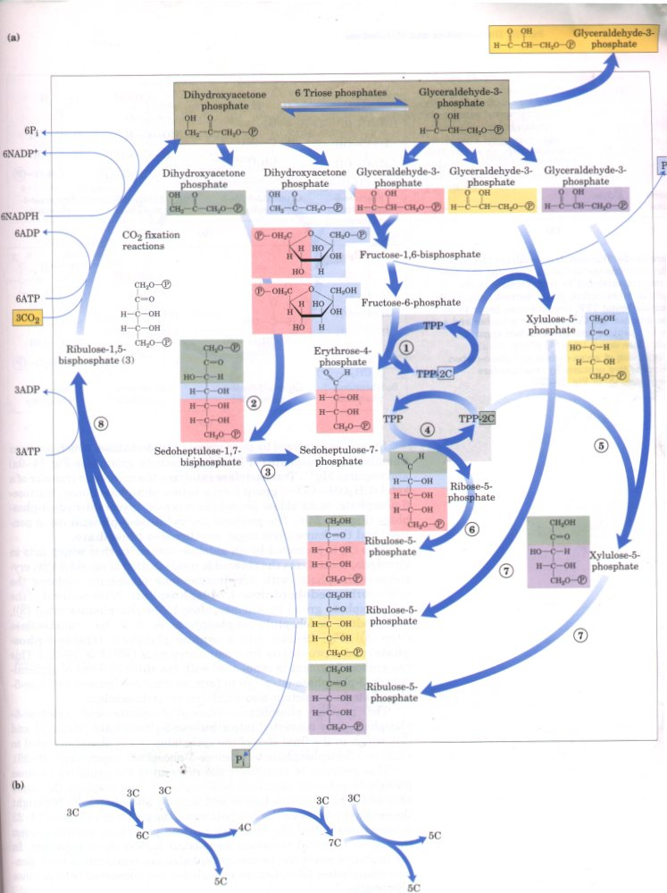
Figure 19-23 (a) The third stage of CO2 fixation consists of the remaining set of reactions of the Calvin cycle, in which ribulose-1,5-bisphosphate is regenerated from the triose phosphates. The starting materials are the triose phosphates: glyceraldehyde-3-phosphate and dihydroxyacetone phosphate. Reactions catalyzed b aldolase (step 2) and transketolase (steps 1 , 4 and 5 ) produce pentose phosphates, all of which are eventually converted to ribulose-1 5-bisphosphate. The two-carbon group carried by TPP in steps l and 4(TPP-2C) is a ketol group: CH2OH-CO-. The individual reactions are described in the text. (b) A simplified schematic diagram showing the interconversions of triose phosphates (three-carbon (3C) compounds) into pentose phosphates (five-carbon (5C) compounds).
Step l is catalyzed by the enzyme transketolase, which contains thiamine pyrophosphate (TPP) as its prosthetic group (see Fig. 14-9a) and requires Mg2+. Transketolase catalyzes the reversible transfer of a ketol (CH2OH-CO-) group from a ketose phosphate donor, fructose6-phosphate, to an aldose phosphate acceptor, glyceraldehyde-3-phosphate (Fig. 19-24b). The products are xylulose-5-phosphate (a pentose) and the four-carbon sugar erythrose-4-phosphate.
Step 2 is promoted by an aldolase similar to that which acts in glycolysis; it catalyzes the reversible condensation of an aldehyde, erythrose-4-phosphate, with dihydroxyacetone phosphate, yielding the seven-carbon sedoheptulose-1,7-bisphosphate. After removal of the C-1 phosphate group by sedoheptulose-1,7-bisphosphatase (step 3), the product sedoheptulose-7-phosphate is split by transketolase (step 4 (Fig. 19-24c) into a pentose phosphate (ribose-5-phosphate) and a two-carbon fragment, carried on TPP (Fig. 19-25). This two-carbon fragment is condensed with the three carbons of glyceraldehyde-3-phosphate (step 5 ) to form another molecule of xylulose-5-phosphate in a reaction also catalyzed by transketolase.
The pentose phosphates-ribose-5-phosphate and
xylulose-5phosphate-are converted into ribulose-5-phosphate
(steps 6 and 7 ), which in the final step of the cycle (step 8 is
phosphorylated to ribulose-1,5-bisphosphate by
ribulose-5-phosphate kinase (Fig. 19-26).
This pathway is essentially the reversal of the oxidative pentose
phosphate pathway described in Chapter 14, and employs the same
enzymes to interconvert hexose and pentose phosphates. To
highlight the similarity between the two pathways, the pathway of
Figure 19-23 is sometimes called the reductive pentose phosphate
pathway, even though no chemical reduction steps occur among
these reactions. In the oxidative sequence, hexose phosphates are
regenerated from pentose phosphates; here, hexose phosphates are
converted into pentose phosphates.
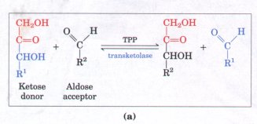 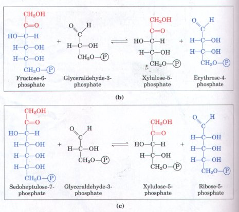 |
Figure 19-24 Transketolase catalyzes two very similar reactions in the Calvin cycle. (a) The general reaction catalyzed by transketolase is the transfer of a two-carbon group, carried temporarily on enzyme-bound TPP, from a ketose donor to an aldose acceptor. (b) Conversion of a hexose and a triose to a pentose and a four-carbon sugar by transketolase action (step 1 of Fig. 19-23). (c) Conversion of seven-carbon and three-carbon skeletons to two pentoses by transketolase (steps 4 and 5 of Fig. 19-23). |
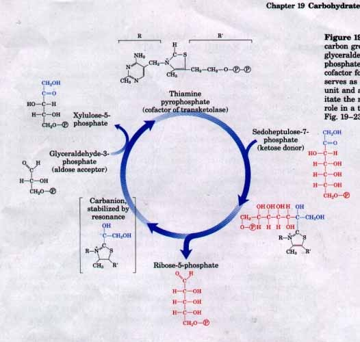
Figure 19-25 Transketolase transfers a twocarbon group from sedoheptulose-7-phosphate to glyceraldehyde-3-phosphate producing two pentose phosphates (steps 4 and 5 of Fig. 19-23). The cofactor for transketolase, thiamine pyrophosphate, serves as a temporary carrier of the two-carbon unit and as an electron sink (see Fig. 14-9) to facilitate the reactions shown. TPP plays a very similar role in a two-carbon group transfer in step 1 of Fig. 19-23.
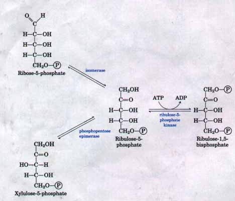
Figure 19-26 Regeneration of ribulose-1,5-bisphosphate from two pentose phosphates produced in the Calvin cycle involves the action of an isomerase and an epimerase, then phosphorylation by a kinase, with ATP as phosphate group donor (steps 6 , 7 and 8 of Fig. 19-23).